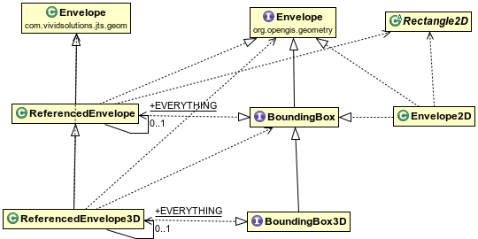
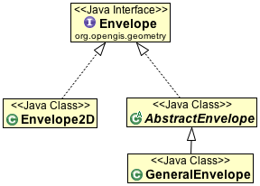

Envelope¶
Envelopes are used to represent the bounds of a geometry, and are used very frequently as a way to quickly check if a geometry is in the area you are interested in.
GeoTools, through virtue of reusing code, has two “Envelope” implementations to contend with:
- Java Rectangle2D - we have Envelope2D which is spatial extension of the Java Rectangle2D class. Our implementation makes use of doubles to store coordinates and holds on to a CoordinateReferenceSystem allowing us to tell where the coordinates are located.
- JTS Envelope - we have ReferencedEnvelope which is adds a CoordinateReferenceSystem to a traditional JTS Envelope. A subclass of ReferencedEnvelope is ReferencedEnvelope3D which supports a third dimension on top of the regular two dimensions.
As you can see ReferencedEnvelope and ReferencedEnvelope3D are a bit of a olive branch between the JTS Geometry model and ISO Geometry model.
You will find other “Rectangles” around as you make use of GeoTools in a real world application.
Java Rectangles
Java Rectangles record x,y,w,h:
Rectangle2D
- Rectangle2D.Double rectangle working with doubles
- Rectangle2D.Float rectangle working with floats
Envelope2D we have a spatial specific version of Rectangle2D that implements ISO Geometry Envelope
Rectangle the original rectangle for working on the screen, measured in integers
ReferencedEnvelope¶
ReferencedEnvelope is all of these:
- com.vividsolutions.jts.geom.Envelope - as defined by the JTS Topology System ( a Simple Feature for SQL concept)
- org.opengis.geometry.BoundingBox - 2D bounds as defined by the ISO 19107 Geometry
- org.opengis.geometry.Envelope - captures 3D bounds as defined by ISO 19107 Geometry.
Note that in order to support 3D bounds (and use a 3D Coordinate Reference System) we must create an instance of the child class ReferencedEnvelope3D (see below).
In short this is the class to use when you want to represent a bounds in GeoTools. The only other thing of note is the that the constructor expects the input in xMin,xMax,yMin,yMax order and expects a (2D) crs:
ReferencedEnvelope envelope = new ReferencedEnvelope(0, 10, 0, 20, DefaultGeographicCRS.WGS84);
double xMin = envelope.getMinX();
double yMin = envelope.getMinY();
double xMax = envelope.getMaxX();
double yMax = envelope.getMaxY();
double width = envelope.getWidth();
double height = envelope.getHeight();
double xCenter = envelope.getMedian(0);
double yCenter = envelope.getMedian(1);
CoordinateReferenceSystem crs = envelope.getCoordinateReferenceSystem();
int dimension = envelope.getDimension();
// Direct access to internal upper and lower positions
DirectPosition lower = envelope.getLowerCorner();
DirectPosition upper = envelope.getUpperCorner();
// expand to include 15, 30
envelope.include(15, 30);
envelope.isEmpty(); // check if storing width and height are 0
envelope.isNull(); // check if "null" (not storing anything)
envelope.setToNull();
ReferencedEnvelope does one thing very well; it is an Envelope that has a CoordinateReferenceSystem. Because it has a CoordinateReferenceSystem you can quickly transform it between projections.:
CoordinateReferenceSystem sourceCRS = CRS.decode("EPSG:4326");
ReferencedEnvelope envelope = new ReferencedEnvelope(0, 10, 0, 20, sourceCRS);
// Transform using 10 sample points around the envelope
CoordinateReferenceSystem targetCRS = CRS.decode("EPSG:23032");
ReferencedEnvelope result = envelope.transform(targetCRS, true, 10);
ReferencedEnvelope is used in a lot of GeoTools interfaces, basically anywhere we can get away with it. Using a raw JTS Envelope without knowing the the CoordinateReferenceSystem is difficult to use as the information is incomplete forcing client code to make assumptions. Some code assumes the envelope is in WGS84 while other code assumes it is in the same Coordinate Reference System as the data being worked on.
Some of our older interfaces that you are forced to read the javadocs in order to figure out the CoordinateReferenceSystem for a returned Envelope.
Using a FeatureSource without ReferencedEnvelope example:
Envelope bounds = featureSource.getBounds(); CoordinateReferenceSystem crs = featureSource.getSchema().getDefaultGeometry().getCoordinateSystem();
Using a FeatureSource with ReferencedEnvelope:
ReferencedEnvelope bounds = (ReferencedEnvelope) featureSource.getBounds(); CoordinateReferenceSystem crs = bounds.getCoordinateReferenceSystem();
ReferencedEnvelope3D¶
ReferencedEnvelope3D is all of these:
- ReferencedEnvelope including all parent classes and interfaces
- org.opengis.geometry.BoundingBox3D - 3D bounds as defined by the ISO 19107 Geometry
This is the class to use when you want to represent a 3D bounds in GeoTools. The constructor expects the input in xMin,xMax,yMin,yMax,zMin,zMax order and expects a 3D crs:
ReferencedEnvelope3D envelope = new ReferencedEnvelope3D(0, 10, 0, 20, 0, 30, DefaultGeographicCRS.WGS84_3D);
double xMin = envelope.getMinX();
double yMin = envelope.getMinY();
double zMin = envelope.getMinZ();
double xMax = envelope.getMaxX();
double yMax = envelope.getMaxY();
double zMax = envelope.getMaxZ();
double width = envelope.getWidth();
double height = envelope.getHeight();
double depth = envelope.getDepth();
double xCenter = envelope.getMedian(0);
double yCenter = envelope.getMedian(1);
double zCenter = envelope.getMedian(2);
CoordinateReferenceSystem crs = envelope.getCoordinateReferenceSystem();
int dimension = envelope.getDimension();
// Direct access to internal upper and lower positions
DirectPosition lower = envelope.getLowerCorner();
DirectPosition upper = envelope.getUpperCorner();
// expand to include 15, 30, 40
envelope.include(15, 30, 40);
envelope.isEmpty(); // check if storing width and height are 0
envelope.isNull(); // check if "null" (not storing anything)
envelope.setToNull();
As explained above, when using a 3D CRS we must create an instance of ReferencedEnvelope3D and not of its parent class. If we are not sure what dimension we are dealing with, there are safe ways to create, copy, convert or reference ReferencedEnvelope instances:
ReferencedEnvelope env; // can hold both regular ReferencedEnvelope as well as ReferencedEnvelope3D
ReferencedEnvelope original = null; // can be instance of ReferencedEnvelope3D;
CoordinateReferenceSystem crs = null; //can be 2D or 3D
org.opengis.geometry.Envelope opengis_env = null; //can be instance of ReferencedEnvelope(3D)
com.vividsolutions.jts.geom.Envelope jts_env = null; //can be instance of ReferencedEnvelope(3D)
BoundingBox bbox = null; //can be instance of ReferencedEnvelope(3D)
//safely copy ReferencedEnvelope, uses type of original to determine type
env = ReferencedEnvelope.create( original );
//safely create ReferencedEnvelope from CRS, uses dimension to determine type
env = ReferencedEnvelope.create( crs );
//safely create ReferencedEnvelope from org.opengis.geometry.Envelope, uses dimension in Envelope to determine type
env = ReferencedEnvelope.create( opengis_env, crs );
//safely create ReferencedEnvelope from com.vividsolutions.jts.geom.Envelope, uses dimension in Envelope to determine type
env = ReferencedEnvelope.create( jts_env, crs );
//safely reference org.opengis.geometry.Envelope as ReferencedEnvelope
//--> if it is a ReferencedEnvelope(3D), simply cast it; if not, create a conversion
env = ReferencedEnvelope.reference ( opengis_env);
//safely reference com.vividsolutions.jts.geom.Envelope as ReferencedEnvelope
//--> if it is a ReferencedEnvelope(3D), simply cast it; if not, create a conversion
env = ReferencedEnvelope.reference ( jts_env);
//safely reference BoundingBox as ReferencedEnvelope
//--> if it is a ReferencedEnvelope(3D), simply cast it; if not, create a conversion
env = ReferencedEnvelope.reference ( bbox);
OpenGIS Envelope¶
OpenGIS records a “rectangle” as a bounds along the axis mentioned by the CoordinateReferneceSystem object. You can use this idea to record a simple rectangle in space, a height range and and a range in time as needed.
- Envelope2D - was introduced above; used to bridge to Java2D
- ReferencedEnvelope - was introduced above; used to bridge to JTS Geometry
- GeneralEnvelope - allows you to record spans in multiple dimensions (think depth, height or time)
Since Envelope is just and interface, so we will use RefernecedEnvelope for the example:
CoordinateReferenceSystem wsg84 = CRS.decode("EPSG:4326"); org.opengis.geometry.Envelope envelope = new ReferencedEnvelope(0, 10, 0, 20, wsg84); double xMin = envelope.getMinimum(0); double yMin = envelope.getMinimum(1); double xMax = envelope.getMaximum(0); double yMax = envelope.getMaximum(1); double width = envelope.getSpan(0); double height = envelope.getSpan(1); double xCenter = envelope.getMedian(0); double yCenter = envelope.getMedian(1); CoordinateReferenceSystem crs = envelope.getCoordinateReferenceSystem(); // Direct access to internal upper and lower positions DirectPosition lower = envelope.getLowerCorner(); DirectPosition upper = envelope.getUpperCorner(); // expand to include 15, 30 upper.setOrdinate(0, Math.max(upper.getOrdinate(0), 15)); upper.setOrdinate(1, Math.max(upper.getOrdinate(1), 30)); lower.setOrdinate(0, Math.min(lower.getOrdinate(0), 15)); lower.setOrdinate(1, Math.min(lower.getOrdinate(1), 30));
You can see even in a simple example we should be looking at the CRS to figure out what the axis is actually measuring.
If you are super confident that you are working with data in X/Y order you can directly make use of BoundingBox box. BoundingBox is an extension of Envelope for working with 2D data, and it has been made method compatible with JTS Envelope where possible.
Since BoundingBox is just an interface, so we will use RefernecedEnvelope for this example:
CoordinateReferenceSystem wsg84 = CRS.decode("EPSG:4326"); org.opengis.geometry.BoundingBox bbox = new ReferencedEnvelope(0, 10, 0, 20, wsg84); double xMin = bbox.getMinX(); double yMin = bbox.getMinY(); double xMax = bbox.getMaxX(); double yMax = bbox.getMaxY(); double width = bbox.getWidth(); double height = bbox.getHeight(); double xCenter = bbox.getMedian(0); double yCenter = bbox.getMedian(1); CoordinateReferenceSystem crs = bbox.getCoordinateReferenceSystem(); // Direct access to internal upper and lower positions DirectPosition lower = bbox.getLowerCorner(); DirectPosition upper = bbox.getUpperCorner(); // expand to include 15, 30 bbox.include(15, 30);
JTS Envelope¶
The JTS Topology Suite has the concept of an Envelope recorded in x1,x2, y1,y2 order.
You can see that the use of JTS Envelope has the same “assumptions” as the use of BoundingBox above.:
com.vividsolutions.jts.geom.Envelope envelope = new Envelope(0, 10, 0, 20); double xMin = envelope.getMinX(); double yMin = envelope.getMinY(); double xMax = envelope.getMaxX(); double yMax = envelope.getMaxY(); double width = envelope.getWidth(); // assuming axis 0 is easting double height = envelope.getHeight(); // assuming axis 1 is nothing // Expand an existing envelope Envelope bbox = new Envelope(); envelope.expandToInclude( bbox ); // Use envelope.covers(5, 10); // inside or on edge! envelope.contains(5, 10); // inside only // Null envelope.isNull(); // check if "null" (not storing anything) envelope.setToNull();
Transform an Envelope using the JTS Utility class:
CoordinateReferenceSystem sourceCRS = CRS.decode("EPSG:4326"); CoordinateReferenceSystem targetCRS = CRS.decode("EPSG:23032"); Envelope envelope = new Envelope(0, 10, 0, 20); MathTransform transform = CRS.findMathTransform(sourceCRS, targetCRS); Envelope quick = JTS.transform(envelope, transform); // Sample 10 points around the envelope Envelope better = JTS.transform(envelope, null, transform, 10);